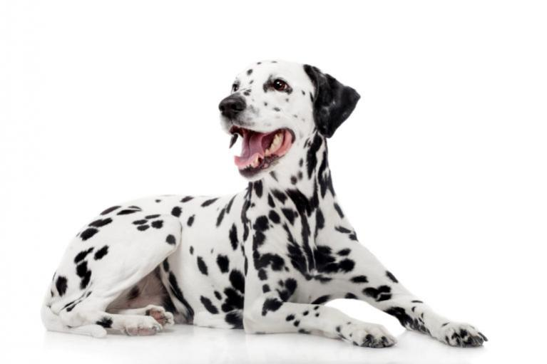
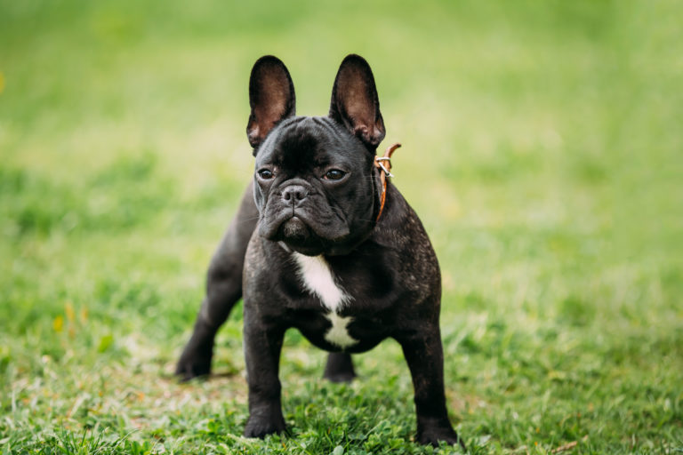
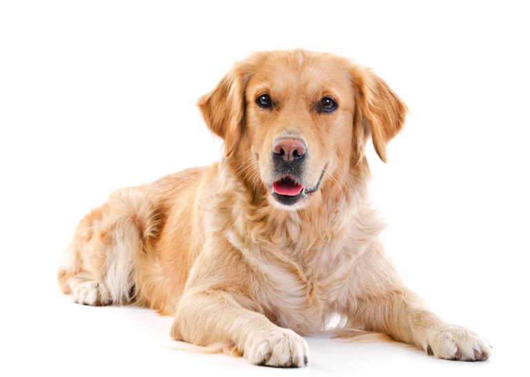

Dalmata

A dalmaták szívesen vannak társaságban – akár családjuk, akár más állatok körében. Legszívesebben mindenütt ott vannak, s nagy alkalmazkodóképességű és kellemes kísérőnek számítanak – feltéve, hogy úgy fizikailag, mint szellemileg kellőképpen leterheltek. Nagyon érzékenyek, s ha a családban feszültséget érzékelnek, inkább visszavonulnak.
Bulldog
A francia bulldog rövid, zömök testfelépítésével egy izmos, tömzsi négylábú benyomását kelti. A mintegy 30 cm-es marmagasságú állat súlya 8-14 kg. Feltünőek a szögletes alakú fején álló nagy denevérfülek valamint a jellemzően rövid mancsok és kurta farok. Az aljszőrzetnélküli fényes bundája a legváltozatosabb színekben fordul elő a szokásos feketétől, fehértől kezdődően egészen a bézs, krém vagy sötét foltos színekig.
Retriever
A Golden Retriever híres engedelmességéről, amely semmilyen más kutyafajtáéhoz nem hasonlítható. Minden vágya, hogy gazdája tetszését elnyerje, tudásszomja igen nagy. Derűsen veszi a mindennapokat és legszívesebben minden tevékenységben részt venne gazdájával. Az emberközpontú Retriever tehát világszerte a legkedveltebb családi kutyák egyike. Derűs, jó megbízható és játékos természete miatt különösen kedvelt kisgyermekes családok körében. A „Goldie” más háziállatokkal is barátságos, könnyen összeszoktatható.
Komodor